이 페이지는 네이버 쇼핑 커넥트 활동의 일환으로, 판매 발생 시 수수료를 제공받습니다.
이 페이지는 쿠팡 파트너스 활동의 일환으로, 이에 따른 일정액의 수수료를 제공받습니다.
이 포스팅은 토스쇼핑 쉐어링크 활동의 일환으로, 이에 따른 일정액의 수수료를 제공받습니다.
영상에서 본 상품, 바로 가격 보기
쇼츠·영상에 나온 상품을 최근 영상부터 모았어요. 버튼을 누르면 쿠팡이나 토스 앱으로 바로 이어져요. 가격은 확인 날짜 기준이라 들어가서 한 번 더 확인해 주세요.
🛍️ 영상 속 네이버 인기템

미엘 물티슈 클래식 플레인 캡형 정직한평량 유아용 저자극 대용량 100매 20팩
23,900원 · 10/29 확인
네이버에서 가격 보기 →![[베이비바우처/N배송] 베이비앙 국내산 무형광 신생아 아기 유아 엠보 순면 대나무 오가닉 거즈 가제손수건 10장](https://shop-phinf.pstatic.net/20250604_1/1748998818445vscA4_JPEG/12498359306398917_222716738.jpg)
[베이비바우처/N배송] 베이비앙 국내산 무형광 신생아 아기 유아 엠보 순면 대나무 오가닉 거즈 가제손수건 10장
8,900원 · 10/29 확인
네이버에서 가격 보기 →📺 최근 영상
🎬 쇼츠 「아이 입 닦다가 물티슈 찢어지는 거 국룰임?」 속 상품
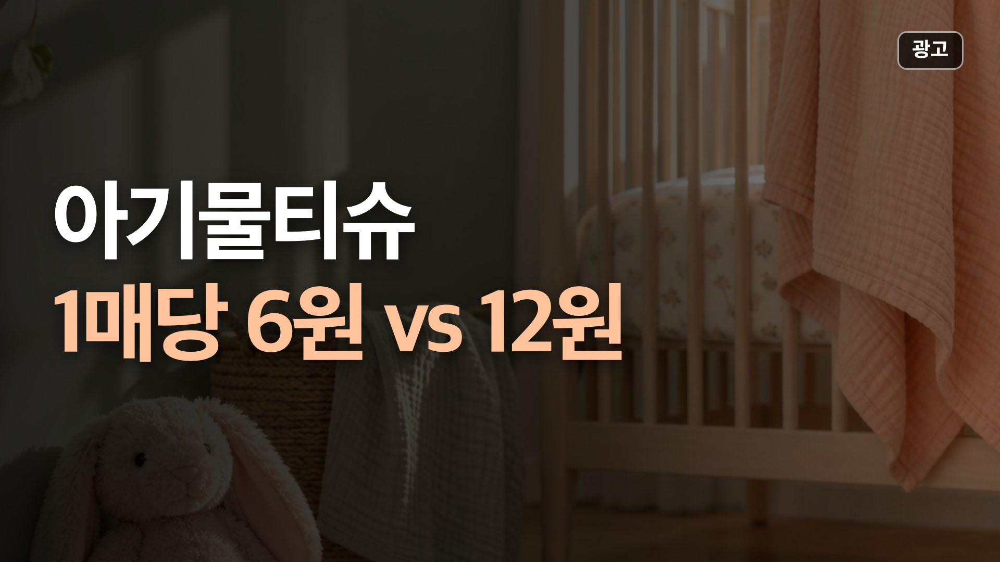
아기물티슈 추천 비교
맘스럽 아토클래식은 1매당 6원으로 가장 싸지만 얇다는 상품평이 많아 청소·식탁처럼 막 쓰는 집에 맞아요.
📅 가격은 10월 20일 확인값이에요.
비교 전체 보기🎬 쇼츠 「택배 상자 바닥이 축축하다면?」 속 상품
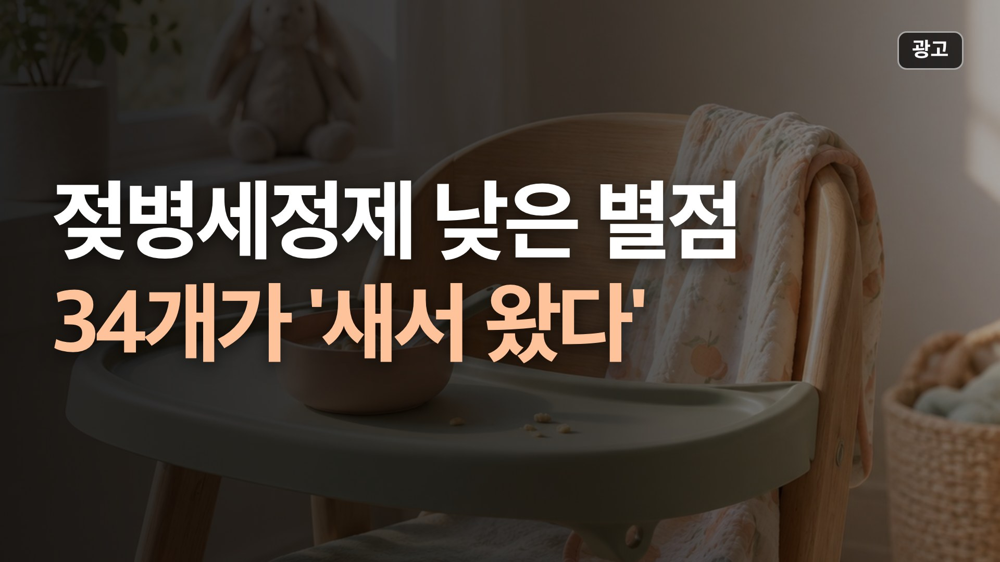
젖병세정제 낮은 별점 80개 중 34개는 '새서 왔다'
100ml당 가장 싼 쪽은 네이쳐러브메레 젖병 세정제 액상형 레몬향(650ml 5,000원, 100ml 769원)과 비앤비 액상형 젖병세정제 허브그린향(600ml 4,900원, 100ml 817원)이에요. 다만 비앤비 액상형은 별점 1~3점 20개 중 11개가 거품이 안 난다는 내용이었어요.
📅 가격은 10월 26일 확인값이에요.
비교 전체 보기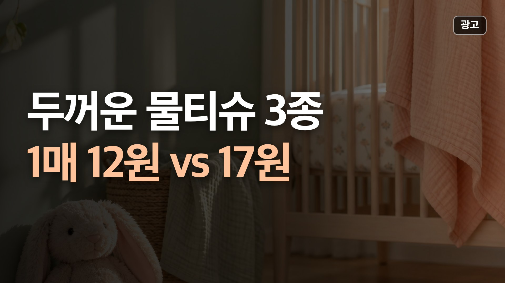
숨 시그니처 물티슈 토스 8,490원 vs 쿠팡 12,130원
숨 시그니처 물티슈 63g 70매 10팩은 같은 구성이 쿠팡 12,130원, 토스쇼핑 8,490원이라 1매 약 12원으로 셋 중 가장 쌌어요.
📅 가격은 10월 21일 확인값이에요.
비교 전체 보기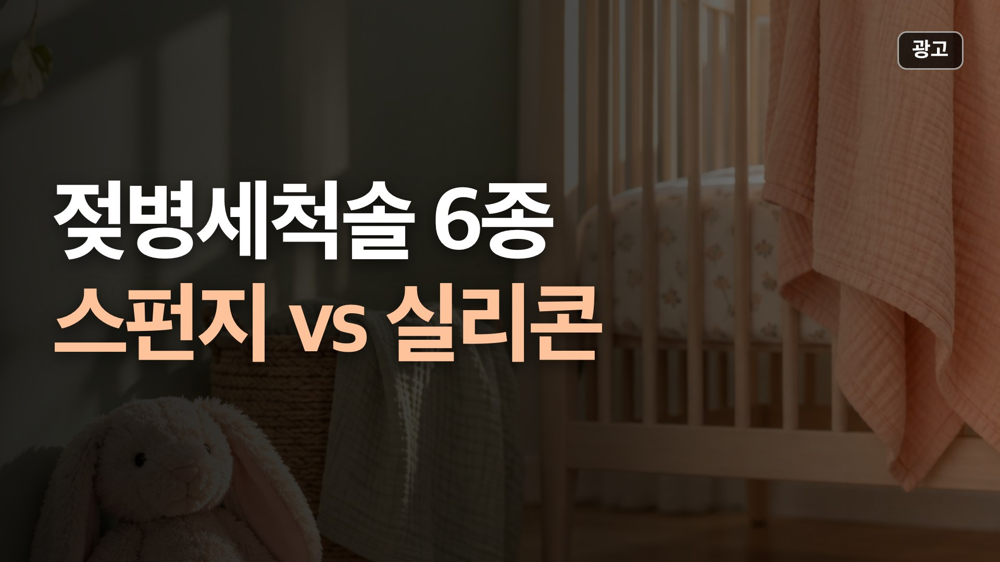
젖병세척솔 추천 비교
젖병과 젖꼭지를 한 번에 해결하려면 베베그로우 젖병 세척솔 + 젖꼭지 세척솔 세트(8,600원).
📅 가격은 10월 20일 확인값이에요.
비교 전체 보기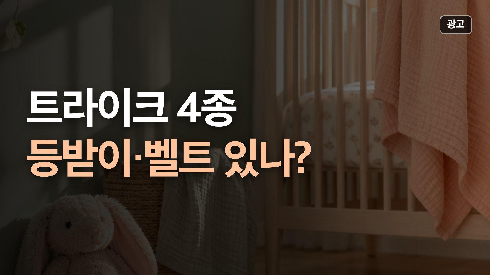
트라이크 추천 비교
아이가 타다가 잘 때가 많다면 등받이와 벨트가 있는 쿨키즈 F1(5점식)이나 베이블퓨어리 T2(3점식)입니다.
📅 가격은 10월 18일 확인값이에요.
비교 전체 보기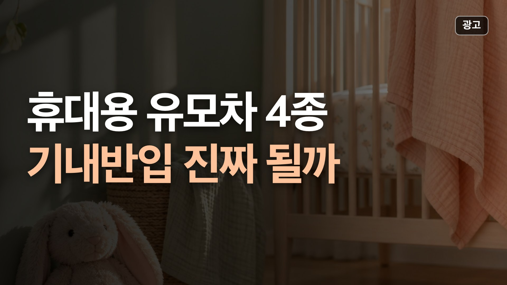
휴대용 유모차 추천 비교
항공사 기준(세 변 합 115cm 이하)에 맞는 건 접은 크기 114cm인 스토케 요요3, 115cm인 리안 플라이입니다.
📅 가격은 10월 17일 확인값이에요.
비교 전체 보기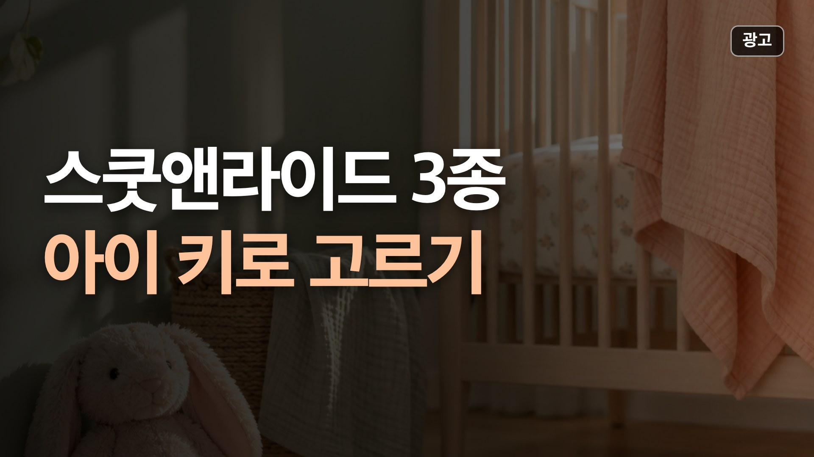
스쿳앤라이드 킥1 푸시앤고 vs 킥3S vs 킥5
걷기 시작했고 키 82cm 이상이면 붕붕카↔킥보드로 바뀌는 킥1 푸시앤고(82~118cm, 부모용 손잡이).
📅 가격은 10월 17일 확인값이에요.
비교 전체 보기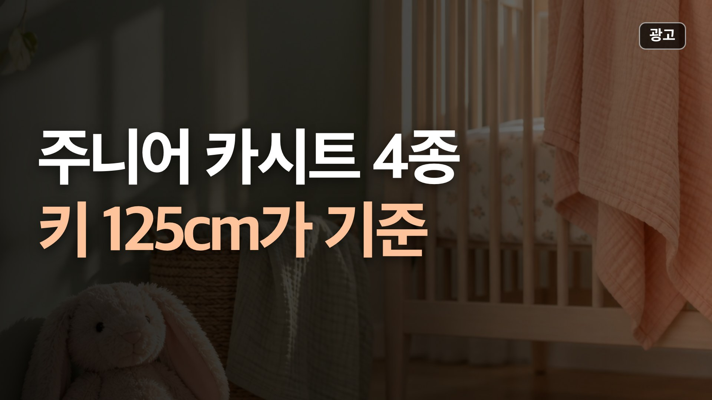
주니어 카시트 추천 비교
등받이 없는 방석형 부스터(다이치 이노픽스 부스터, 4만 원대)는 가볍지만, 국제 규정상 새로 승인되는 등받이 없는 부스터는 키 125cm·22kg 이상용입니다.
📅 가격은 10월 17일 확인값이에요.
비교 전체 보기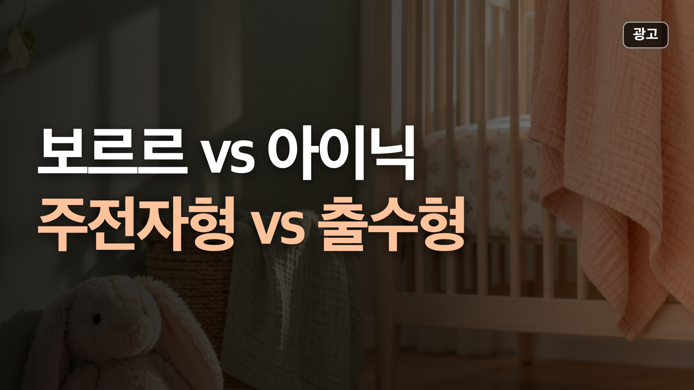
보르르 분유포트 vs 아이닉 올케어
가격을 낮추고 유리 포트로 끓이고 43℃로 계속 두고 싶으면 보르르 분유포트(95,000원, 1.3L, 700W).
📅 가격은 10월 17일 확인값이에요.
비교 전체 보기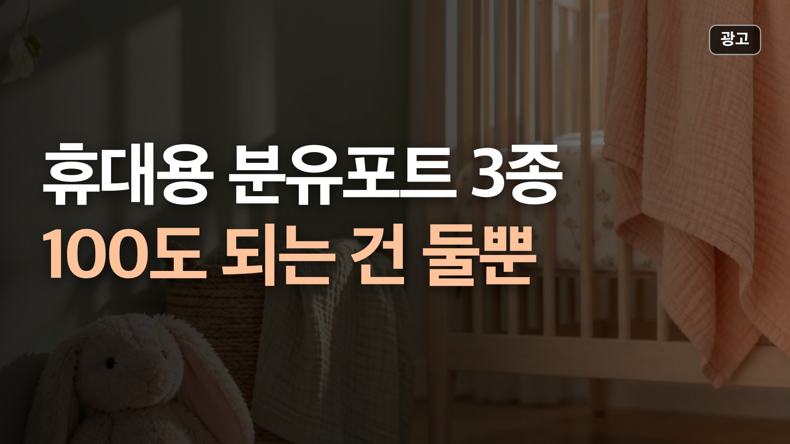
나리몽 분유포트 프로 vs 꿈비 vs 코넘
밖에서도 물을 100℃로 끓이고 오래 보온하려면 나리몽 프로(18,000mAh, 보온 45시간 표기).
📅 가격은 10월 16일 확인값이에요.
비교 전체 보기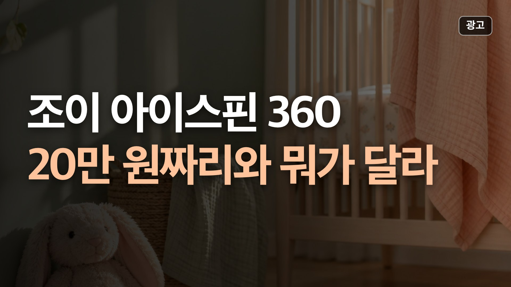
조이 아이스핀 360 vs 에어보스·순성 아크
한 개로 12세까지 쓰고 예산을 아끼려면 에어보스 스위벨(19만 원대, 키 40~150cm).
📅 가격은 10월 15일 확인값이에요.
비교 전체 보기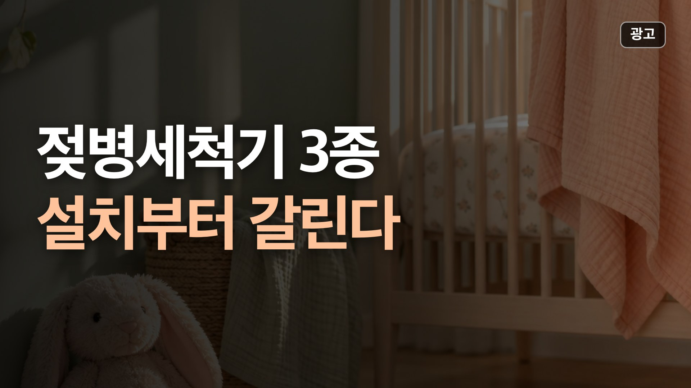
젖병세척기 비교 추천
배수 연결 없이 아무 데나 두고 버튼 하나로 끝내려면 베이비브레짜 원스텝.
📅 가격은 10월 13일 확인값이에요.
비교 전체 보기